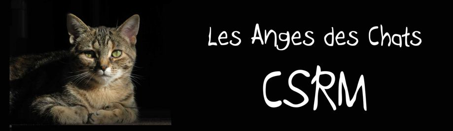
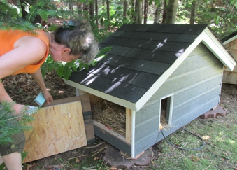
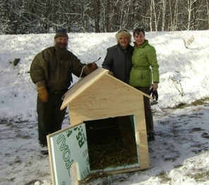
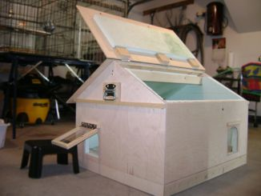

|
|
|

CAPTURE - STÉRILISE - RELÂCHE - MAINTIEN |
||||
UNE FOIS QUE LA COLONIE EST STÉRILISÉE... il est très important qu’il y ait des anges pour nourrir et héberger les chats stérilisés non-domesticables qui retournent à l’extérieur. |
La nourriture pour chat de ferme est idéale et s'achète en grosse poche. Cette nourriture est plus grasse et parfaite pour les chats qui vivent à l'extérieur.
|
|
HÉBERGEMENT
Il faut aussi s'assurer de donner aux chats une place sécuritaire contre les intempéries et les forces de la nature.
IMPORTANT À SAVOIR
Les chats sont de très bons chasseurs de vermine, surtout les petits rongeurs. Il est avantageux de les garder chez soi.
|
|
Votre colonie de chats a besoin de pouvoir se réfugier dans des abris chauds cet hiver. Voici des idées peu couteuses pour les héberger. |
|
| Maisonnette de chats (isolée + électrifiée + entrée et sortie d’urgence en cas d’attaque de chat/renard/pékan) correspondant à vos goûts, contactez Monsieur Renaud (450) 224-8125 ou (450) 858-4059 |
 |
Maisonnette « Fernand Lessard » isolée pour le froid, avec électricité et porte localisée sur la devanture. (450) 227-6484 |
 |
Maisonnette « Jean Chalifoux », Maisonnette deluxe adaptée aux colonies de chats, avec entrée et sortie de secours au cas où un prédateur se pointe à la maisonnette, isolée pour le froid. Toit ouvrant pour faciliter l’entretien. (450) 227-6484 |
 |

Pour adopter des chats CSR déjà stérilisés, vermifugés et vaccinés à prix d'amis
Pour plus d'informations Contactez-nous: (450) 227-6484 |
|
Les chats vedettes de ce site sont tous des chats rescapés, vermifugés, vaccinés et stérilisés.